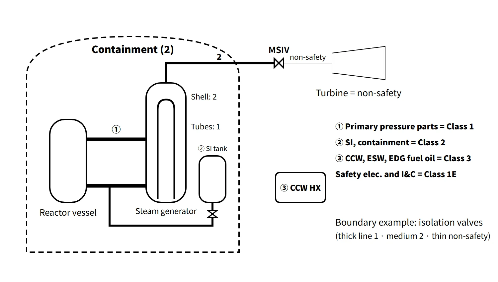

Operation, Regulation & Quality · C-OP-005
Safety Class — Classes Assigned by Safety Function and Their Link to Codes, Seismic Category and Quality
Function decides the class and the class brings the code: Class 1 for the RCPB, Class 2 for containment and emergency cooling, Class 3 for support, with seismic, electrical and QA classes judged separately.
A safety class is assigned to the equipment of a reactor facility according to the safety function it performs (integrity of the reactor coolant pressure boundary, safe shutdown and maintaining shutdown, and preventing or mitigating accidents that could cause off-site exposure). In South Korea an NSSC Notice divides equipment into Safety Classes 1, 2 and 3 and non-safety class, and sets the design, fabrication and inspection codes for each class.
The key is the order "function → class → code." What the equipment does decides its class, and the class then brings with it the applicable code (ASME III Class 1, 2, 3; KEPIC MNB, MNC, MND) and the level of quality assurance.
Principle and mechanism
What separates the classes: the consequence of losing the function
Applying the highest code everywhere only raises cost without improving safety. GDC 1 (10 CFR 50 App. A) and Article 12 of the Korean technical standard rule for reactor facilities therefore require classes and codes "commensurate with the importance of the safety function." One question separates the classes: if this equipment fails, which barrier or safety function is lost?
| Class | Notice article | Assigned to (summary) |
|---|---|---|
| Safety Class 1 | Article 5 | Pressure-retaining parts and supports of RCPB equipment whose failure could cause a loss of coolant exceeding the reactor coolant makeup capacity |
| Safety Class 2 | Article 6 | Containment pressure-retaining parts and supports + equipment, other than Class 1, for fission-product isolation, emergency heat and radioactive-material removal (spray), emergency subcriticality (adding negative reactivity or limiting positive reactivity addition through pressure-boundary equipment, e.g. boron injection), emergency core cooling (residual heat removal, ECCS) and emergency coolant supply and storage (refueling water tank) |
| Safety Class 3 | Article 7 | Equipment, other than Classes 1 and 2, for 15 functions including hydrogen control, boron and coolant makeup, maintaining core geometry, shielding, spent-fuel cooling and support of safety equipment (cooling water, lubrication, diesel fuel, motive power, electric power, signals, control, interlocks, environmental conditions) |
| Non-safety class | Article 8 | Equipment without the functions above; specific requirements may be imposed on radioactive waste treatment, effluent monitoring and so on |
Three operating rules
- The stricter class governs: if one component has functions of two classes, it takes the higher one (Article 4).
- The class break is usually at isolation valves: the shared region between different classes is treated as the higher class, but becomes the lower class if an interaction analysis demonstrates it. The class downstream of a valve is judged again by the function of that section. The RCPB ends at the outer containment isolation valve for lines that penetrate containment, at the second of two valves closed during normal operation for lines that do not, and it includes the RCS safety and relief valves (10 CFR 50.2).
- The makeup-capacity condition: piping (mainly small-bore lines and instrument lines) whose failure loses coolant within the reactor coolant makeup capacity (charging pumps), so that the plant can be shut down and cooled normally, is not Class 1 even though it is part of the RCPB. The criterion is this condition, not size itself. The wording of the Notice is "reactor coolant makeup capacity"; the expression "makeup system during normal operation" comes from the Class 1 exception in 10 CFR 50.55a(c)(2).
Correspondence with other classification schemes
The safety class usually corresponds with the quality group, code, seismic category, electrical class and quality assurance. However, each classification is judged by its own criteria, so they do not become identical automatically.

- ANSI/ANS-51.1 (PWR): SC-1, SC-2, SC-3 and NNS share the same framework as South Korea's 1, 2, 3 and non-safety, and are used together in FSAR classification tables.
- RG 1.26 quality groups A–D: A = RCPB (ASME III Class 1, governed directly by 10 CFR 50.55a), B = Class 2, C = Class 3, D = general codes such as B31.1 and Sec. VIII.
- RG 1.29 seismic category: safety-class equipment is normally Seismic Category I. Even non-safety equipment gets Seismic Category II, to assure structural integrity, if its collapse could damage Category I equipment.
- IEEE 308 Class 1E: electrical equipment essential to emergency shutdown, containment isolation, core cooling, heat removal and prevention of release. The Korean Notice groups safety electrical and I&C items under Safety Class 3 functions (motive power, electric power, signals, control). In design documents electrical items are marked separately in an electrical-class column (1E/Non-1E).
- Quality assurance: Safety Class 1, 2 and 3 items get the full 10 CFR 50 App. B and KEPIC QAP (utility quality class Q).
What it means in a plant
Classes can split within one component
The class is assigned per SSC according to its safety function, and different parts (pressure boundaries) of the same component can carry different classes. Typical examples from APR1400 design documents:
- Safety Class 1: reactor vessel (MNB), pressurizer, steam generator primary side (channel head and tubes), reactor coolant pump casing, hot and cold legs, pressurizer surge line, control element drive mechanism pressure housing, reactor vessel supports (MNF)
- Safety Class 2: containment pressure-retaining parts, steam generator secondary shell, safety injection pumps and safety injection tanks, containment spray system, shutdown cooling system, in-containment refueling water storage tank (IRWST), main steam and main feedwater piping up to the isolation valves, fuel transfer tube flange (MNE)
- Safety Class 3: component cooling water (CCW), essential service water (ESW), spent fuel pool cooling system, core support structures (MNG), emergency diesel generator fuel oil and support systems, 1E power and protection systems, main control room HVAC, hydrogen control equipment
- Non-safety: turbine-generator, condenser, main feedwater pumps, circulating water system, radioactive waste treatment systems
In the same steam generator, the inside of the tubes and the channel head (primary side) are Class 1 while the shell outside the tubes (secondary side) is Class 2. The control element drive mechanism pressure housing is Class 1, while its other parts fall into Classes 2 and 3 or non-safety.
![PWR system map colored by safety class: reactor vessel, pressurizer, steam generator tubes and channel head, hot and cold legs and reactor coolant pump in Class 1 red; containment shell, steam generator shell, safety injection tank, main steam and feedwater piping up to the isolation valves, shutdown cooling and IRWST in Class 2 blue; CCW, CCW heat exchanger, essential service water and emergency diesel fuel oil in Class 3 green; turbine, condenser and main feedwater pump non-safety grey; with a photo of a branch line and valves, a chip strip showing main pipe Class 1, isolation valves 1 and 2, then classification by function, and a box of classification rules](../../assets/images/concepts/c-op-005-safety-class/fig2-pwr-class-map.webp)
Uses in design and operation
- Design: the class determines material certification, design stress analysis (including fatigue analysis for Class 1), non-destructive examination and hydrostatic test pressure. The 2018 revision (No. 2018-6) absorbed and abolished the separate notice on pressure testing (No. 2017-22), so this Notice now also sets the pressure-test requirements.
- Operation: the scope and interval of in-service inspection, keeping the class of maintenance parts (equivalency and commercial-grade dedication) and the equipment scope of the Technical Specifications all follow the class.
- Accident response: Safety Class 1 prevents damage to the first barrier (LOCA), Class 2 mitigates that accident, and Class 3 supports Class 2 so it can work. A higher class number does not mean less important: lose CCW or ESW and the ECCS eventually cannot reject its heat.
Regulatory basis
| Basis | Key point |
|---|---|
| Korean technical standard rule for reactor facilities, Article 12 | SSCs important to safety are designed, fabricated, installed, tested and inspected to safety classes and codes commensurate with the importance of their safety function |
| Korean NSSC Notice on Safety Classes and Class-Specific Codes for Reactor Facilities (No. 2026-13) | Article 3 definitions, Article 4 general requirements, Articles 5–8 classes, Article 9 class-specific codes (KEPIC MN/ASME III; electrical KEPIC E/IEEE 603, 279; structural KEPIC SN/ACI 349, AISC N690); CSA N285 for PHWRs |
| 10 CFR 50 App. A GDC 1, 50.2, 50.55a | Commensurate quality standards, definition of safety-related, RCPB Class 1 and its exceptions |
| RG 1.26 Rev. 6 (2021), RG 1.29 Rev. 6 (2021) | Quality groups A–D, Seismic Categories I and II |
| ANSI/ANS-51.1, IEEE 308 and 603 | SC-1–3 and NNS, Class 1E |
| 10 CFR 50 App. B; Korean standard on detailed QA requirements for reactor facilities | QA for safety-related items |
| IAEA SSR-2/1 Rev. 1 Requirement 22, SSG-30 (2014) | Safety categories 1–3 (functions), safety classes 1–3 (SSCs) |
The current Notice is No. 2026-13 (2026.8.26), which renamed it from "…Regulation" to "…Notice"; Articles 5 and 6 read the same as in No. 2024-3 (2024.3.14). The changes were the code editions in Article 9 (up to KEPIC MN 2020 and ASME III 2019) and a new rule applying Code Cases per RG 1.84 Revision 39; the earlier No. 2026-7 (2026.1.20) only updated a cited notice name in Article 3, item 4. The framework of the class definitions (1 = RCPB, 2 = containment and emergency cooling, 3 = support) is the same as when the questions were set in 2009, 2022 and 2025.
Easily confused pairs
| Safety class | Quality group (RG 1.26) | Seismic category (RG 1.29) | Quality class (utility) | |
|---|---|---|---|---|
| Basis | Safety function | Code level of pressure equipment | Required performance in an earthquake | Level of QA applied |
| Divisions | 1, 2, 3, non-safety | A, B, C, D | I, II, non-seismic | Q, A, S (formerly Q, T, R, S) |
| What it decides | Codes, inspection and QA overall | ASME III Class or B31.1 | Function maintained after SSE / structural integrity | Full App. B / augmented / general |
- Safety-related vs important to safety: safety-related SSCs perform the three functions in 10 CFR 50.2 and match South Korea's Safety Class 1, 2 and 3 equipment. SSCs important to safety are a wider set that includes non-safety items such as Seismic Category II, fire protection and ATWS and SBO equipment.
- Quality classes Q, T, R, S (2002 question): Q is safety-related items (full App. B) and S is general industrial quality. T is non-safety items with augmented quality requirements (e.g. Seismic Category II equipment) and R is radioactive waste treatment systems (RG 1.143). T and R were later merged into A (augmented quality), giving the Q, A, S system.
- 10 CFR 50.69 RISC-1 to 4: a US scheme that overlays risk significance on the deterministic class to adjust the scope of special treatment. It does not replace the classes of the Korean Notice.
Key points at a glance
- Definition: a class assigned to equipment according to its safety function (RCPB integrity, safe shutdown and maintaining it, preventing and mitigating accidents with off-site exposure) — Korean technical standard rule Article 12, NSSC Notice.
- Safety Class 1: RCPB equipment whose failure would lose coolant beyond the reactor coolant makeup capacity (reactor vessel, pressurizer, SG primary side, RCP casing, main coolant piping).
- Safety Class 2: containment pressure-retaining parts + isolation, spray, boron injection, ECCS, residual heat removal, IRWST.
- Safety Class 3: support functions — CCW, ESW, spent-fuel cooling, core support structures, EDG fuel oil, safety electrical and I&C (1E).
- Non-safety: turbine, condenser, main feedwater pumps; specific requirements for radwaste systems.
- Rules: the stricter class governs; shared regions take the higher class; piping meeting the makeup-capacity condition is excluded from Class 1.
- Codes: 1, 2, 3 ↔ ASME III Class 1, 2, 3 (KEPIC MNB, MNC, MND) ↔ quality groups A, B, C; non-safety ↔ D (B31.1).
- Links (judged separately): safety-class equipment is normally Seismic Category I; electrical and I&C items are Class 1E; QA is App. B (utility quality class Q).

This is a model answer, not an official solution. It reflects the criteria current as of 2026.
Exam relevance
Safety class has appeared five times in the Korean Professional Engineer (Nuclear Power) exam: 67th exam, session 3, Q6 (criteria for assigning quality classes Q, T, R, S); 2009 exam, session 1, Q7 (Safety Classes 1, 2, 3); 2016 exam, session 1, Q2 (safety-related equipment); 2022 exam, session 3, Q4 (distinguishing Safety Classes 1, 2 and 3 with examples — at least three for Class 2 and five for Class 3); and 2025 exam, session 3, Q2 (Safety Classes 1 and 2 as defined in the Notice). Typical questions ask for the definition of each class with the assigning article and typical equipment, or for the meaning of "safety-related." Quote the Class 1 condition as loss of coolant "beyond the reactor coolant makeup capacity," and do not equate safety class with seismic category or quality group — they correspond but are judged separately.